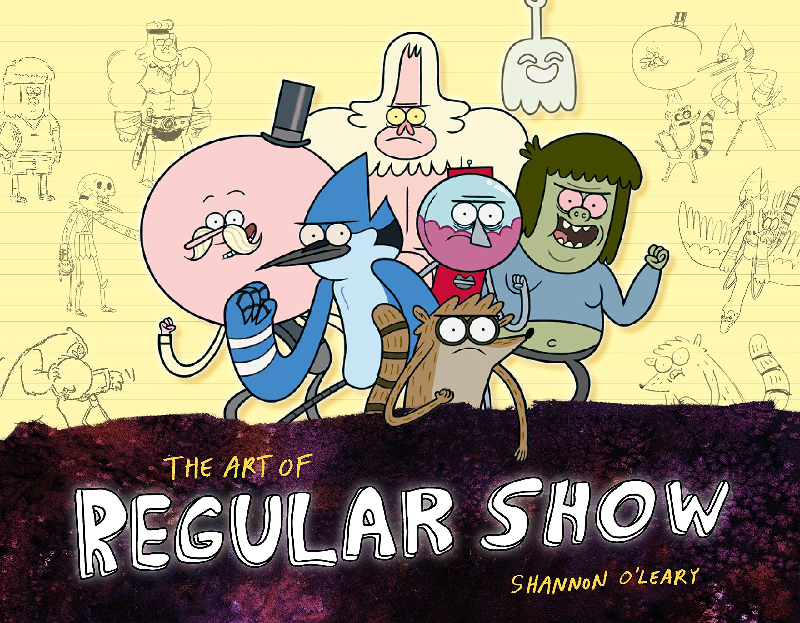
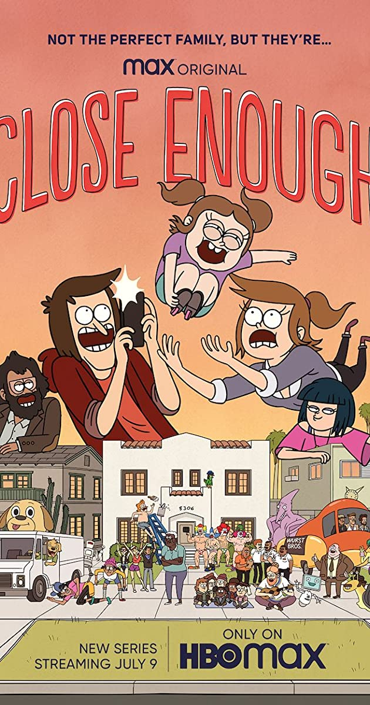

Regular Show and Its Always Sunny are both humor based shows with unreal wacky outcomes and plotlines. Regular Show may seem a little more childish because it was a CN show so if it doesn't click the creator made a show on HBO MAX called, "Close Enough", that is also worth trying out
 